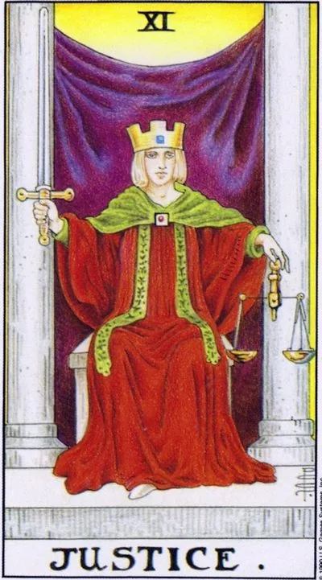

Старший аркан · XI
XIСправедливость
Justice
Аркан честного итога: ничто не исчезает бесследно, и решение будет вынесено по существу, а не по симпатиям.
Архетип и основное значение
Справедливость — аркан точного расчёта. Меч в поднятой руке говорит: решение принято окончательно, весы в левой — что холодная логика уравновешена интуицией. В мире этой карты ничего не растворяется в воздухе: каждый поступок, слово и даже невысказанное намерение возвращаются к своему автору.
Когда она выпадает, время притворяться закончилось. Обстоятельства складываются так, что факты встанут на свои места — и вместе с ними придётся признать собственную роль в произошедшем. Это не кара и не трибунал, а восстановление нарушенного порядка.
Связанный с Весами аркан учит видеть спор с обеих сторон и выбирать не удобное, а верное.
В быту
День подходит для наведения порядка в договорённостях: верните долг, закройте формальности, перечитайте условия договора до подписи. Назревший бытовой спор — о деньгах, графике, обязанностях — разрешится, если обсуждать дело, а не чувства. Всё, что разделено сейчас поровну, больше не станет поводом для обид.
Работа и карьера
Дела требуют юридической аккуратности: фиксируйте договорённости письменно, готовьтесь к проверкам, аттестациям или переговорам о компенсации. Исход будет объективным, особенно если ваши руки чисты. Карта покровительствует юристам, аудиторам, посредникам и всем, кто выносит кадровые решения: повышение придёт как оценка реальных заслуг.
Отношения
Отношения проходят проверку на честность. Пора обсудить не то, кто кого любит сильнее, а справедливо ли устроен союз: кто вкладывается, кто пользуется, чего каждый ждёт на самом деле. Такой разговор снимает накопленные обиды лучше любых примирений, а одиноким обещает встречу с человеком зрелым и порядочным — нередко связанным с правом или старше по возрасту.
Здоровье
Тело напоминает о балансе: нагрузки и отдых должны уравновешивать друг друга, иначе организм выставит счёт. Зона внимания — почки, поясница, кожа; хороший момент для обследования и второго, трезвого мнения вместо самодиагностики. Выздоровление сейчас идёт ровно, если точно соблюдать назначения врача.
Эзотерическое значение
Эзотерически это аркан кармического учёта: вечерняя инвентаризация дня — без оправданий и самобичевания — заметно выравнивает события. Весы фигуры соотносят с египетской Маат, чьё перо взвешивает душу после смерти. В практике образ меча используют для отсечения лжи: остриё режет иллюзии, а твёрдая рука держит только то, чем действительно владеешь.
Весы накренились: предвзятость, уход от неудобных вопросов и решения, принятые в чужих интересах.
Архетип и основное значение
Перевёрнутая Справедливость — суд, который прошёл без вас или против вас. Чьи-то заслуги записаны в чужой столбец, чужие ошибки висят на вас.
Нередко карта описывает внутреннего обвинителя: человек судит себя строже любого трибунала, тащит не свой груз — или, наоборот, самооправдывается и перекладывает вину вовне, пока урок не усвоен.
Аркан предупреждает: попытка обойти закон — государственный, человеческий или кармический — обернётся двойным счётом.
В быту
Возможна путаница в документах и обещаниях: перепроверьте счета, расписки, устные договорённости — всё незафиксированное рискует быть истолкованным против вас. Споры с коммунальными службами и продавцами потребуют больше времени, чем стоило бы. Крупные покупки отложите: сегодняшняя цена не отражает ценности.
Работа и карьера
На работе возможна несправедливая оценка: премия распределена по симпатиям, ошибка раздута, идея ушла под чужим именем. Официальные процессы затягиваются или оборачиваются осложнениями — держите копии документов и привлекайте юриста. Отдельное предупреждение касается вас самого: небольшая «хитрость» с отчётностью закончится проверкой, а односторонние решения сегодня лучше не принимать вовсе.
Отношения
В паре копится счёт взаимных претензий: один отдаёт, другой принимает как должное, и оба молчат о неравенстве. Прошлое используется как оружие в нынешних спорах, ревность рядится в заботу — такой обмен «по справедливости» убивает близость. Возможен тяжёлый раздел имущества и общих друзей.
Здоровье
Симптомы путают и вас, и врачей: диагнозы меняются один за другим, лечение не даёт эффекта — ищите причину глубже первых назначений. Тело сигналит о хроническом перекосе: односторонние нагрузки, недосып, попытки заглушить стресс алкоголем. Второе мнение обязательно, самолечение сейчас играет роль пристрастного судьи.
Эзотерическое значение
В магической работе карта указывает на незакрытые кармические счета — родовые истории, где кого-то оболгали или лишили своего. Очищение не подействует, пока не проведена честная ревизия собственных поступков: сначала признание, потом отпущение. Обереги на правосудие сейчас слабы; сильнее всего работает отказ от участия в чужих интригах.
🌿 Кратко и просто
Основная идея
Справедливость здесь точнее понимать как Правосудие. Это карта договора между двумя равными сторонами. У каждого есть свои интересы, права и обязательства.
Как проявляется
Договоры, обещания, обязательства, партнёрство, юридические вопросы и необходимость соблюдать достигнутые договорённости.
Работа и деньги
Документы, контракты, суды, юристы, официальное оформление.
В отношениях
Именно официальный брак: юридически оформленный договор между двумя людьми.
Теневая сторона
Справедливость не становится «злой». Она просто начинает работать против человека. Долг нужно вернуть независимо от того, удобно это сейчас или нет.
Особенность школы
Карта связана с Весами и VII домом. Главная формула — «Овен — это я, Весы — это ты».
📜 Развёрнуто — выжимки лекций
Суть карты
Он читает карту через английское Justice → латинская Юстиция, богиня договоров: ядро карты — «ощущение договора между двумя равными сторонами», судебные и договорные дела. По-русски он называл бы карту «Правосудие»: правосудие и справедливость для жителей бывшего СНГ «либо с лёгким недоумением, либо с громогласным смехом» совпадать не могут — карта о божественном принципе правосудия, который искажается неидеальными людьми («божественная сущность искажается в нашем материальном мире»). По его системе соответствий — VII дом, знак Весов, две планеты Венера и Хирон, дающие вместе «подсознательное ощущение гармонии» — ставить нужный предмет на нужное место. В цикле арканов это середина Зодиака, точка у корней Иггдрасиля: после Отшельника и Колеса Фортуны человек переходит от накопления к отдаче — «пол жизни вдох, пол жизни выдох».
Прямое положение
Славянского ряда нет.
Общий ряд: партнёрство, конкуренция с противоположной стороной, обязательства, данное обещание, договор — пусть даже устный: «как договорились так и нужно выполнять, назвался груздем полезай в кузов». Весы = чужая точка зрения: твои интересы на одной чашке, интересы другого человека на другой. Цитирует Уэйта: карта «строго следует традиционной символике» и подобно Верховной жрице восседает между колоннами, но это «нравственное начало каждому воздающее по его заслугам» — строгое правосудие договорённостей, а не духовный суд Жрицы.
Работа/финансы: бумажная работа — написанное люди воспринимают как закреплённую истину; одалживая деньги или отдавая имущество, фиксируйте обязательства документально («железная бумажка броня» Преображенского) — иначе «потом фиг докажешь что к чему». Суд — карта указывает на него почти буквально. Профессия: юрист либо клиент; сдавая квартиру — официальный договор. Совместное имущество, коммунальное жильё: ужиматься в свободах, занимая лишь свою половину плиты (личное жильё живёт в противоположном доме Овна).
Отношения: эмоциональное умиротворение по формуле «как работал так и заработал» — это не высшая справедливость: как относишься к человеку, так он и к тебе. Принятие чужих желаний. Карта — только официальный брак: печать, загс или ратуша, свидетели, задокументированное обещание; традиционный брак — это Иерофант, продление рода «как деды-прадеды». В Калифорнии Justice может выпасть на нетрадиционный брак — он юридически оформлен: договориться можно о чём угодно.
Саморазвитие: служение и помощь (смотри нужды партнёра: «раз мы братья — твои проблемы мои проблемы»), вторая половина жизни — отдавать людям то, что накопил. Есть и личная выгода быть хорошим пионером — искреннее двуличие; «худой мир лучше хорошей войны», любая улыбка лучше её отсутствия.
Негативное значение
Формула: справедливость в негативе — «то же самое, что и обычная справедливость… она в любом случае присутствует», просто работает против тебя. Взял взаймы 10000 долларов на год и отдал — прямая; год прошёл, отдавать должен, а денег нет — справедливость уже против тебя, «но она всё равно присутствует», удобно тебе либо нет. Минусы качеств конкретизируются попутно: бюрократизм — явно названный негативный аспект карты (закручивают то, что надо делать быстро, расписывают нюансы договора; учите детали, иначе Немезида накажет); перекос Весов — раствориться в интересах Овна, забыть себя и страдать; чёрный Овен — думает только о себе, легко предаёт. На вопрос из чата о связи карты с кармическими уроками ответил: об этом отдельная лекция в четверг — здесь темы кармы нет.
Акценты и фишки школы
- - Мифология карты — симбиоз трёх богинь: Фемида (меч и весы), Немезида — крылатое возмездие за нарушение обещаний (часы, плеть, колесница с грифонами, согнутая в локте рука — локоть как мера длины, весы торговца) и Кибела — корона зубцами как башня, покровительница зерна и торговли. Весы Немезиды считали прообразом созвездия Весов — потому карту и ставят в VII дом.
- - Юстицию часто рисовали со страусом: самец страуса высиживает потомство — «идеальный муж, идеальный отец», другая сторона договора; плюс перо страуса на весах души у египтян (сам оговаривается: «детали могу забыть»).
- - Хирон связывает его с Императором: опытный создатель законов; те же планеты в Тельце фоново дают материю и вкусовую жизнь, в Весах — «разумное существование в закономерном мире», осознание чужих правил. Люди-Весы тонко чувствуют гармонию композиции, красоту, «близость к божественному идеалу».
- - Две колонны: у Жрицы открывают путь внутрь подсознания, здесь — в «мир человеческих договорённостей»; Жрица этот мир прячет и защищает.
- - Антитеза I/VII: «овен это я, а весы это ты», одна монета с разных сторон; у родившегося в доме тень-«слепое пятно» в противоположном; совесть — мерило высшей глубинной справедливости (Плутон у Овна).
- - Астроосторожность: планеты — «стрелки часов», маркеры времени, а не причины бед (пассаж про ретроградный Меркурий: два совпадающих события).
- - Кино: «Брат» Балабанова — Данила (Весы) вершит земной суд, на который не имеет права, судья и палач в одном лице; само имя Даниил = «Бог мне судья»; брат-наёмник — типичный чёрный Овен. Джон Уик наказывает нарушителей киллерских понятий (даже у убийц свой законодательный совет). «Эрин Брокович» — идеальные Весы, забывающие о себе ради дела. Сэм Гэмджи — образ слуги-денщика при носителе высокой идеи (цитата Толкина про денщиков войны 14 года). «47 ронинов» — долг и обещание, соблюдаемое под страхом смерти; злодей — Марс, колдунья — чёрный аспект Верховной жрицы. Вспоминает Раскольникова и «Десять негритят».
- - Принципиально не смешивает Таро с чакрами и восточным мировоззрением — «натягивание совы на глобус»: курс построен на европейской традиции.
- - Банцхафа не цитирует ни разу.
Ключевые слова
- договор · обязательство и данное обещание · партнёрство · чужая точка зрения · бумажная работа / железная бумажка · официальный брак · совместное имущество, коммуналка · суд и юрисдикция · баланс «я ↔ ты» · «пол жизни вдох, пол жизни выдох»
- ---